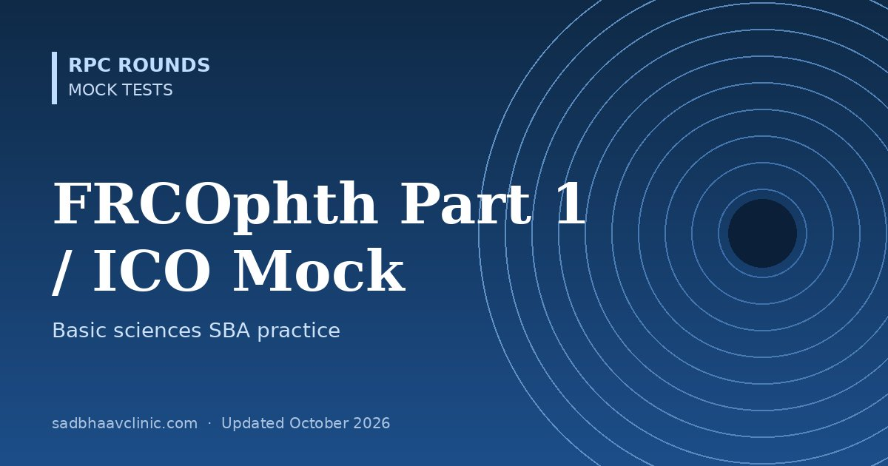

FRCOphth Part 1 and ICO Basic Sciences Mock Test: 50 MCQs
Last updated: October 2026
A 50-question basic sciences mock in the single-best-answer style used by the FRCOphth Part 1 and the ICO Standard examinations (Visual Sciences; Optics, Refraction and Instruments). It also suits OKAT Module 1 and first-year residents revising the foundations.
- Format: four options, single best answer, 50 minutes (the real Part 1 has two papers of 90 questions, two hours each).
- Topics: anatomy, embryology, physiology, electrophysiology, optics, pharmacology, pathology, microbiology, immunology, genetics and statistics.
- Explanations include the reasoning and a pearl for each question.
For exam formats and preparation advice see OKAP, FRCOphth and ICO exams. For the full basic-science syllabus in question form, see OKAT Decoded Volume 1 and its free sample mock.


Preparing for AIOS-OKAT?
OKAT Decoded is a three-volume question bank by Dr Dhaval Patel: 10,200 original MCQs, each with an explanation, a reason why every other option is wrong, and a pearl, plus 18 full-length mock tests.
More free mocks: all mock tests.
📘 Want more exam-ready material? See Most Commons in Ophthalmology on Kindle, or browse all my books.
Looking for an eye specialist in Ahmedabad? Learn about our Eye Department or book a consultation with Dr. Dhaval Patel.